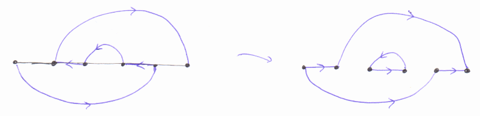
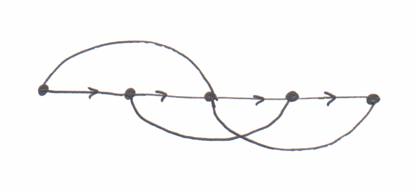
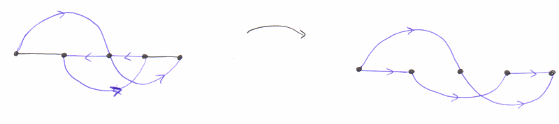
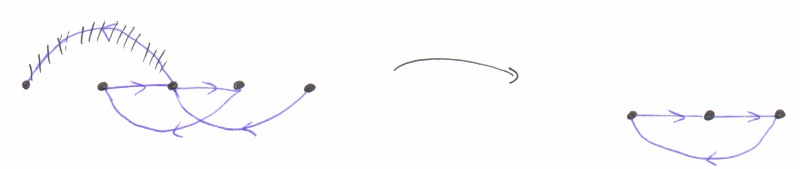

Posted on 15th June 2015
Mostly as an excuse to learn C# I implemented the path finding algorithms. Running some tests (random graphs, and then computing cuts from found disjoint paths, as to verify a "cut" is easy!) caught some implementation issues. All obvious with hindsight.
See the file on GitHub. I wanted to use interfaces, and extension methods, as they are features of C# which differ from e.g. C++. In hindsight, I think an abstract base case Graph would have been more sensible, with DirectedGraph and UndirectedGraph inheriting from this.
DirectedGraph should have a GetNeighbours method.)The Ford-Fulkerson algorithm makes essential use of "unflowing" flow back along a path. In our case, this allows us the new path to make use of an old path in reverse. That, at the end of each step, we really do get a set of edge disjoint paths is slightly tricky (and I didn't prove this-- in the full FF algorithm, it follows by noting that the "flow constraints" always hold).
In my implementation, I simply ignore the issue, and store "paths" as simply a set of (directed) edges. Then, at the end, we reconstruct the paths (using that each edge can occur in only one path, and that a simple greedy algorithm works.) The slightly subtle issue here is shown in the following diagram:

Namely, we can end up with loops which are divorced from any actual "path". Once you realise this, we simply need to ignore it at the final step. In the algorithm itself, we can't run into a problem, as we can always use the "loop" in reverse, when finding a new path, and having a "loop", by definition, means that we don't have to worry about where we start: we can always access all the vertices.
In e.g. the https://en.wikipedia.org/wiki/Depth-first_search on depth-first search, the word "backtracking" is used a lot. So a rather naive way to implement depth-first search might be a recursive algorithm. This would allow us to save "state" on the stack: at each vertex, where in the list of neighbours we had got to, and, encoded in the call stack, the partial path.
For simple route finding, a rather different approach is normally used. Suppose first I simply want to know if I get to vertex target from start. We'd maintain a "stack" (in the abstract datatype sense) of vertices to visit, and a set of visited vertices. At each turn:
target and stop if so.That we use a "stack" means this is depth-first. And we visit each vertex exactly once. Rather than keeping track of state for each vertex, we simply have our set of visited vertices, \(O(V)\) size, and a stack, which in a naive implementation can get as large as \(O(E)\).
If we want to actually find the path, then we can keep track of not only if a vertex has been visited, but also what the "parent" vertex which lead to the vertex is. (I use this terminology as we are effectively finding a spanning tree rooted at start). We can then work backwards from the target vertex, using here that we visit each vertex just once, and so we really do build a tree, and hence there is a well-defined path back to start.
Replacing the "stack" with a "queue" gives a breadth-first search instead.
I implemented the above without really thinking. But it doesn't work for the vertex-disjoint path case, because of the following example:

Here we have one path already, the straight line. It's possible to find a new vertex-disjoint path:

Notice that is traversing the "residual graph", shown on the left, we have the visit the middle vertex twice. This makes route finding somewhat more tricky, as our "history" changes the permissible future paths. In a full backtracking approach, this would be easy to implement, as we'd always have a "local copy" of the current path.
A simple way to implement this in a modification of the above. The observation is that we only need to visit certain vertices twice and never more so. So we simply tediously keep track of if we've coming back for a 2nd time, and if so, remember where we came from on the 1st go. The problem of not keeping track of this extra information is shown here:

Here on the 2nd visit to the middle vertex, we over-write the original "parent" and end up in an infinite loop.